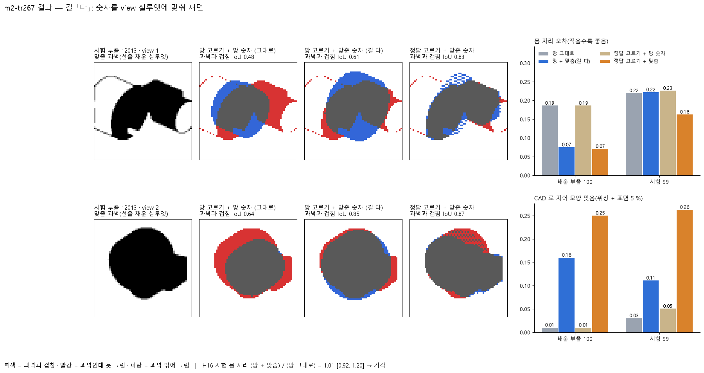

실험 m2_tr0267_h016_맞춤
목표 G1.2 view 모음 → 파츠별 CAD code(CadQuery · 그 전 「3 면도 → 파츠별 CAD」 · 지금 M2 는 위 · 앞 · 옆 고정 세 장만 받음 → 아무 각도 N 장으로 바꿀 것 · 11-20) · G1 첫 제품 — 피규어 · 메카 사진 여러 장 + 치수 → 숨은선 3 면도 + 파츠별 CAD · G0 임의의 이미지 → CAD 코드 · 빌린 가정 4: 생성기기하 · 정답3D · 시점앎 · 정사영 · 갚는 계획: 길 셋(가 · 나 · 다) 비교의 세 번째 · 정답 view · 정답 각도 · 생성기 부품 — 고른 길은 m1 view · 추정 각도 · 원화CAD짝 시험지로 다시 봄 · 실루엣 그리기는 생성기 몸 모양을 따라 씀(실제 부품엔 몸 모양 어휘가 더 필요) · 목표 시험지 값: 안 잼 (!)
길 「다」 — 망은 고르기(몸 있음 · 종류 · 축)만 쓰고, 몸 자리 · 치수는 두 view 실루엣에 맞춰 찾으면 망이 낸 숫자보다 정확한가?
판정 · H16 기각(미리 정한 자 · 칸 번호끼리 시험 몸 자리 1.01 배) — 맞추기는 몸을 실루엣 자리로 옮기지만 망이 칸에 매긴 몸 · 종류가 틀려 칸 번호로는 안 나아짐 · 같이 적은 CAD 모양 맞음은 시험 0.03 → 0.11(정답 고르기면 0.26) · 숫자를 재는 길은 고르기(몸 종류 · 칸 매김)가 맞아야 섬 · 판정 뒤 몸끼리 짝지은 셈 0.56 배는 판정 아님 · 다음: 세 길 정리 → 고르기 일반화(데이터 양) · 맞추기에 안쪽 선
| 가설 | 주장 | 결과 | 근거 |
|---|---|---|---|
| H16 | 숫자를 view 실루엣에 맞춰 재면 망이 낸 숫자보다 훨씬 정확하다 | 기각 | 시험 몸 자리 망 0.220 → 맞춤 0.222 · 배운 부품 0.186 → 0.075(0.40 [0.27, 0.59]) · 정답 고르기면 시험 0.226 → 0.162(0.72 [0.59, 0.90]) · 같이 CAD 모양 맞음 시험 망 0.03 → 맞춤 0.11 · 정답 고르기 + 맞춤 0.26 · 배운 부품 0.01 → 0.16 · 0.25 · 표면 거리 가운데 시험 0.274 → 0.164 · 맞춤 손실(BCE) 시험 1.03 → 0.10 · 판정 뒤 새로 잼(판정 아님): 칸 번호 대신 몸끼리 짝지으면 시험 몸 자리 0.184 → 0.102 · 정답 고르기 + 맞춤 0.090 |
분석
한 줄로
물음: 망은 몸 있음 · 종류 · 축만 고르고, 몸 자리 · 치수는 두 view 실루엣에 맞춰 찾으면, 망이 낸 숫자보다 정확한가?
답: 미리 정한 자로는 아니다(H16 기각 · 시험 1.01 배). 맞추기가 몸을 실루엣 자리로 옮기기는 한다. 하지만 망이 칸마다 매긴 몸과 종류가 틀려서, 칸 번호끼리 비교하면 나아지지 않는다. 같이 적은 CAD 모양 맞음은 시험 0.03 → 0.11 로 올랐고, 고르기가 맞으면(정답 고르기) 0.26 이다. 숫자를 재는 길은 고르기가 맞아야 선다.
왜 이 실험을 했나
m2-tr261 에서 m2 를 막는 것은 숫자 칸(특히 몸 자리)이었다. m2-tr263 에서 view 망은 몸들을 가운데로 몰았다. 몸 자리 · 치수는 view 와 각도만 있으면 재서 정해지는 값이다(「정답이 있는 일은 학습하지 않는다」). 세 길 중 마지막, 「다 = 숫자는 재기」 를 시험했다.
바꾼 것 하나
숫자를 내는 쪽. 망(m2-tr263 view 갈래 60 바퀴)이 낸 몸 자리 · 치수를 출발점으로, 몸마다 부드러운 안팎을 그려 두 view 실루엣과 겹치도록 경사 하강으로 옮긴다(300 걸음 · 학습 없음). 몸 모양은 생성기와 같은 꼴(상자 · 회전체)이다. 정답 숫자로 그리면 실루엣이 과녁과 IoU 0.94 로 겹치는 것을 먼저 확인했다. 망 · 부품 · 짓기 · 채점은 m2-tr263 과 같다.
결과

| 시험 99 | 망 그대로 | 망 + 맞춤(길 다) | 정답 고르기 + 망 숫자 | 정답 고르기 + 맞춤 |
|---|---|---|---|---|
| 몸 자리 오차(칸 번호끼리) | 0.220 | 0.222 | 0.226 | 0.162 |
| CAD 모양 맞음 | 0.03 | 0.11 | 0.05 | 0.26 |
| 표면 거리 가운데 | 0.27 | 0.16 | 0.27 | 0.13 |
| 가설 | 결과 | 판정선 | 판정 |
|---|---|---|---|
| H16 맞춤 / 그대로(시험 몸 자리) | 1.01 [0.92, 1.20] | ≤ 0.6 지지 · ≥ 0.9 기각 | 기각 |
배운 부품에서는 0.186 → 0.075(0.40 배)로 크게 줄었다. 모양 맞음은 위상(몸 개수 · 붙임)과 표면 거리 5 % 를 함께 맞춘 부품의 비율이다.
왜 이렇게 나왔나
확인한 것
- 실루엣은 맞춰진다. 맞춤 손실이 시험 1.03 → 0.10 으로 내려갔고, 그림의 부품도 view 2 겹침 IoU 0.64 → 0.85 다.
- 고르기가 맞으면 칸 번호로 재도 나아진다. 정답 고르기로 맞추면 시험 몸 자리가 0.72 배 [0.59, 0.90] 이다. 망 고르기의 시험 몸 종류 맞음은 0.36 이라, 칸 k 에 놓인 몸이 정답의 칸 k 몸이 아닌 경우가 많다.
- 판정 뒤 새로 잼(판정 아님): 칸 번호 대신 예측 몸과 정답 몸을 가장 가까운 것끼리 짝지으면, 시험 몸 자리가 0.184 → 0.102 로 줄었다. 맞추기는 몸을 「어느」 정답 몸 자리로는 옮긴다.
짐작 (아직 확인 안 함)
- 처음엔 맞추기가 숫자를 바로 풀 거라 봤지만, 실루엣만 보면 천장이 낮다. 배운 부품을 정답 고르기로 맞춰도 모양 맞음 0.25 다. 겹쳐 가려진 몸, 안쪽 선, 구멍은 실루엣에 안 드러나기 때문으로 보인다.
한계
- 실루엣만 맞춘다(안쪽 선 · 구멍 · 홈 안 봄). 64² 해상도 · 300 걸음 · 정답 view · 정답 각도 · 생성기 부품.
- view 의 13 % 는 창 테두리에 잘려, 채운 과녁이 덜 채워진다(그림의 view 1).
- 미리 정한 자는 칸 번호끼리 비교라, 칸 매김이 틀린 몸을 맞춰도 점수를 못 받는다. 짝지은 셈은 판정 뒤에 새로 잰 것이라 판정에 쓰지 않았다.
배운 것과 다음
숫자를 재는 길은 고르기(몸 종류 · 칸 매김)가 맞아야 선다. 길 다만으로는 처음 보는 부품을 못 푼다.
- 세 길(가 · 나 · 다)을 정리한다. 세 길 모두 처음 보는 부품의 고르기에서 막혔다.
- 고르기 일반화(부품 수 · 생성기 11 만)와, 맞추기에 안쪽 선을 더하는 것을 다음 후보로 둔다.
실험 기록
- 카드 · 맞춤267.py(검사 · 흐름 · 맞추기 · 잼 · 재기 · 그림) · 잼.json · 흐름.png · 결과.png · 원본 out/설명/캐드부품/모델267(맞춤_학습 · 시험 × 망 · 정답구조 · 잼 · 맞춤손실 · 검사_IoU)
- 맞추기는 GPU 0 · 1 에 나눠 돌렸다(시험 · 정답구조 판만 GPU 1). 맞춤손실.json 의 앞 세 판은 맞추기.log 에서 옮겼다.